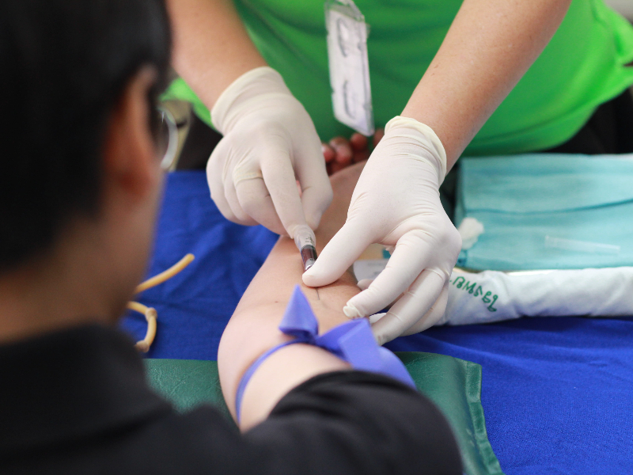
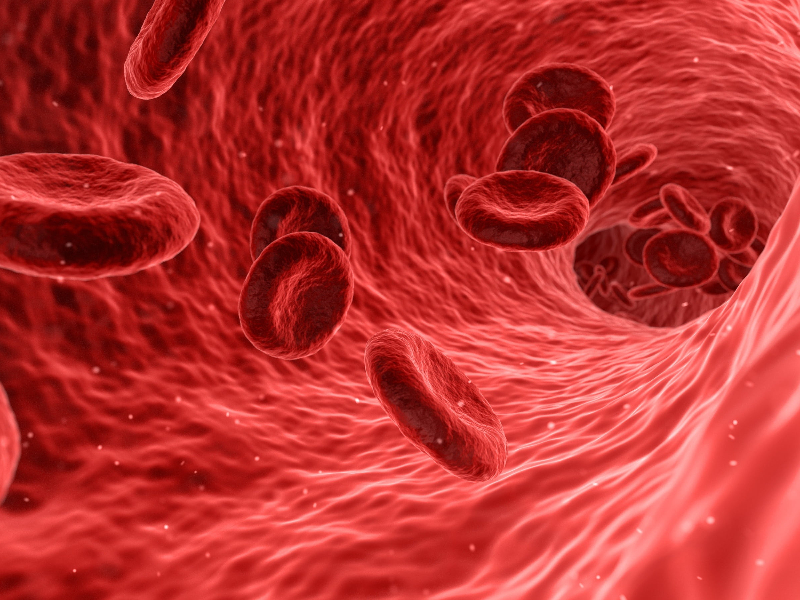
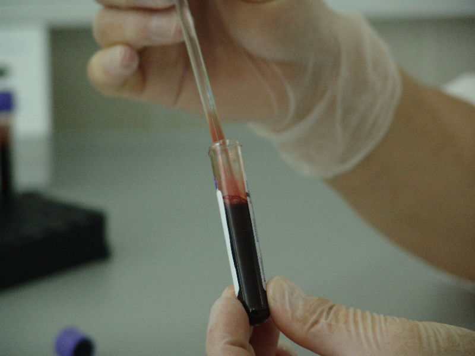

Blood Type A
Antigens: A antigens on the surface of red blood cells. Antibodies: Anti-B antibodies in the plasma. Rh Factor: Either positive (A+) or negative (A-). Type A can donate to: A, AB and receive from: A, AB, O.
This system is designed to streamline and enhance various aspects of blood banking operations.
Here are some key benefits of donating blood:
The most significant benefit of donating blood is that it can save lives. Blood transfusions are crucial for patients undergoing surgeries, recovering from accidents, or dealing with medical conditions such as cancer, anemia, and various other illnesses.
Before donating blood, donors undergo a brief health check, which includes screening for various diseases. This process helps identify potential health issues early on, providing donors with an opportunity to address any concerns with their healthcare provider.

Regular blood donation has been associated with a lower risk of cardiovascular diseases. It helps reduce the viscosity of blood, lowering the chances of clot formation and promoting better heart health.

Donating blood stimulates the body to produce new blood cells. This process can help maintain healthy blood composition and prevent the accumulation of excess iron, which is associated with various health problems.

Some studies suggest that regular blood donation may be associated with increased life expectancy. The potential health benefits, such as improved cardiovascular health, may contribute to a longer and healthier life.
Regular blood donation helps reduce the risk of iron overload in the body. Excess iron can be harmful and may contribute to conditions such as hemochromatosis, which can damage organs and tissues.
The four main blood types in the ABO blood typing system are A, B, AB, and O.
Antigens: A antigens on the surface of red blood cells. Antibodies: Anti-B antibodies in the plasma. Rh Factor: Either positive (A+) or negative (A-). Type A can donate to: A, AB and receive from: A, AB, O.
Antigens: B antigens on the surface of red blood cells. Antibodies: Anti-A antibodies in the plasma. Rh Factor: Either positive (B+) or negative (B-). Type B can donate to: B, AB and receive from: B, AB, O.
Antigens: Both A and B antigens on the surface of red blood cells. Antibodies: No anti-A or anti-B antibodies in the plasma. Rh Factor: Either positive (AB+) or negative (AB-). Type AB can donate to: AB and receive from: A, B, AB, O.
Antigens: No A or B antigens on the surface of red blood cells. Antibodies: Both anti-A and anti-B antibodies in the plasma. Rh Factor: Either positive (O+) or negative (O-). Type O can donate to: A, B, AB, O and receive from: O.
A blood bank system refers to a comprehensive set of software and hardware tools designed to manage various aspects of blood banking operations, from donor registration to blood transfusion. This system plays a critical role in ensuring the availability, safety, and traceability of blood products.
Implementing an electronic blood bank system helps modernize and optimize blood banking operations, ultimately contributing to a more efficient and effective blood supply chain and improving patient care.